Projects and files
A project is everything you have made in the editor: the formulas, the timeline, the relations between glyphs, the recordings and the settings. It lives in the browser while you work, and in a file when you save it. This page is about the file, and about the copies the editor keeps so you do not lose work.
What a project is saved as
A project is one file. There are two kinds, and the editor picks the one a project needs.
| File | What it is | When you get it |
|---|---|---|
name.mfe.json | The project as text (JSON). It also carries the shapes of any font texts, so they draw without a companion. | Almost always. |
name.mfe | A package: the project together with the original of every recording. | When the project has recordings, or more font-text shapes than a .mfe.json can carry. |
Both open with File ▸ Open…: from a card of the Projects dialog, or with its Other file… button (Open, below). A file saved by an older version of the editor opens too: the editor upgrades it in memory and says so, Upgraded from format 27 for example, and the next Save writes the current format. Project files and their format describes what is inside.
The File menu
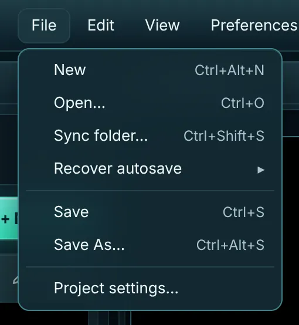
| Entry | Keys | What it does |
|---|---|---|
| New | Ctrl+Alt+N | Starts an empty project. |
| Open… | Ctrl+O | Opens the Projects dialog, which lists the projects of your folder. |
| Sync folder… | Ctrl+Shift+S | Chooses the folder whose projects the dialog lists. |
| Recover autosave | Lists the work of tabs that were closed. | |
| Save | Ctrl+S | Writes the project to its file. |
| Save As… | Ctrl+Alt+S | Writes the project to a file you choose. |
| Project settings… | Name, Manim target, size, frame rate, background, duration and LaTeX preamble. |
New, open and save
New
File ▸ New replaces the project with an empty one. If the project you have open has changes that were not saved to a file, the editor asks first:
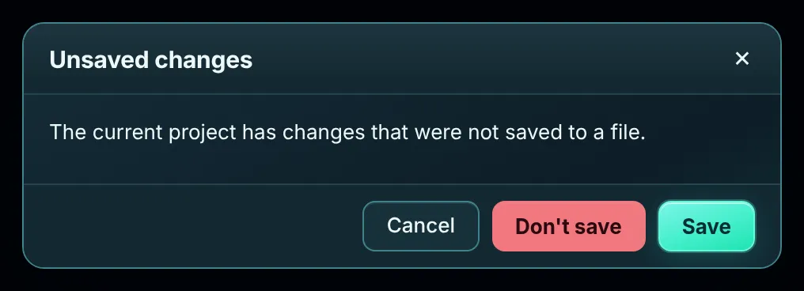
Cancel keeps working. Don't save drops the changes. Save saves, and goes on only if the save went through: when you cancel the picker, the project stays. Open, and Recover autosave, ask the same question.
Open
File ▸ Open… does not open a file picker. It opens the Projects dialog, which lists the projects of a folder you chose once. The project library, below, says how it works. A click on a project opens it.
To open a file that is not in that folder, press Other file… in the dialog: the browser's own file picker opens, and offers .mfe.json and .mfe files. The picker is a window of your operating system, so no picture of it is shown here.
The editor reads and checks a file before it replaces anything. A file it cannot read is reported in a notice (Could not open …, with the reason), and the project you were working on stays as it was. A file that opens with errors or warnings says how many (Opened with 2 issues) and lists them.
The examples
The editor carries four example projects, to play, take apart and change. While a project has no formula, the Creator offers Try an example beside the way to your own projects: it opens Completing the square, the quadratic formula derived step by step. Help ▸ Examples has it too, with three short scenes, each for one thing: Hello: one-to-one (two formulas and the relation between them), Camera (the scene's camera and its moves) and Braces.
An example opens as a file does: when the project you have open has unsaved changes, the editor asks first, as above. The example then becomes a project of yours that has no file yet: the bar says Not saved yet, and Save asks where it goes. The examples are part of the editor, so they open with no synced folder, no server and no companion.
Save and Save As
File ▸ Save writes the project to its file. The first time, or for a project that has no file yet, a picker asks where, and suggests a name made from the project's name: First transform becomes first-transform.mfe.json. After that, Save writes the same file without asking.
File ▸ Save As… always asks, and starts in your synced folder when you have one. The new file becomes the project's file.
A save writes the project as it was the moment you pressed it. If you go on working while it finishes, what you change meanwhile is not in the file, and the bar says Unsaved changes afterwards.
Project settings
File ▸ Project settings… holds what describes the scene as a whole.
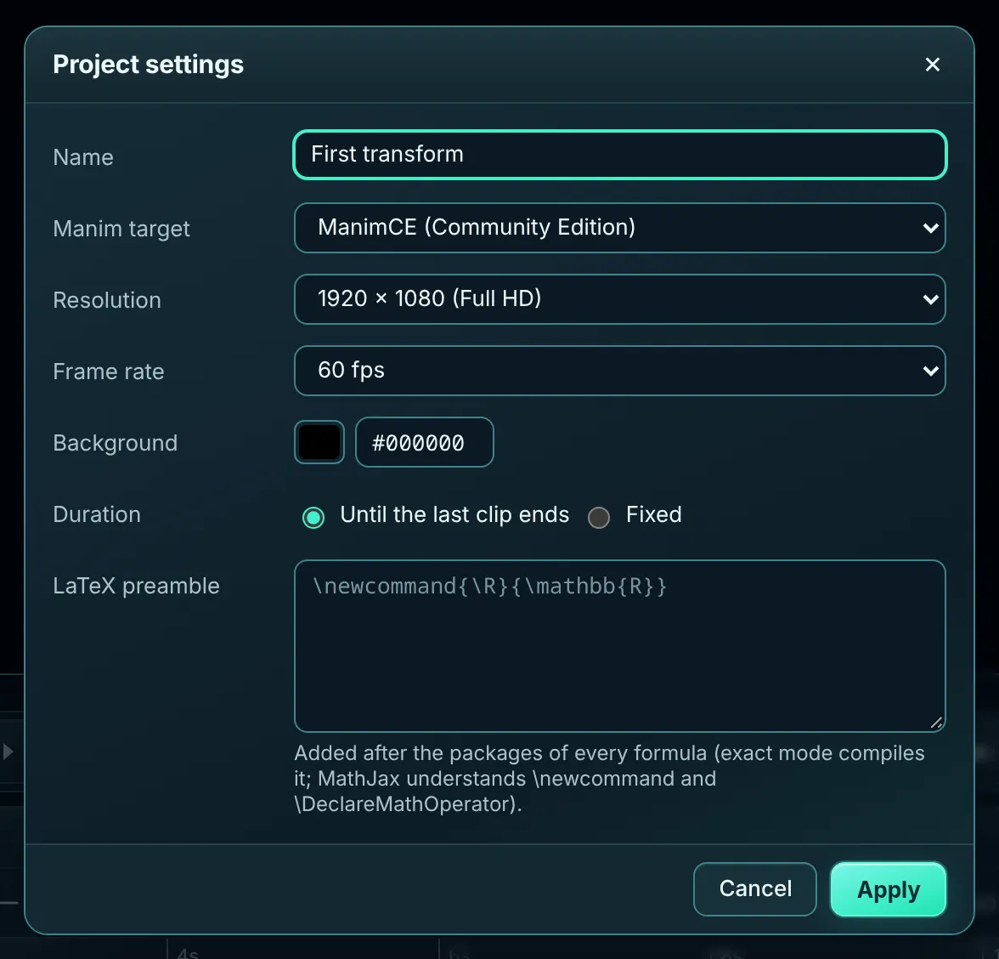
| Field | What it sets |
|---|---|
| Name | The project's name. The exported scene is named after it. |
| Manim target | ManimCE (Community Edition) or ManimGL (3b1b): the Manim the scene is made for. ManimCE and ManimGL says how they differ. |
| Resolution | 1920 × 1080, 1280 × 720 or 3840 × 2160, or Custom… from 16 × 16 to 7680 × 4320 pixels. |
| Frame rate | 24, 25, 30 or 60 frames a second, or Custom… from 1 to 240. |
| Background | The colour behind the scene. A new project takes the background of your active palette, when you have one; otherwise black. |
| Duration | Until the last clip ends, or Fixed: a number of seconds. |
| LaTeX preamble | LaTeX added after the packages of every formula, such as \newcommand{\R}{\mathbb{R}}. MathJax understands \newcommand and \DeclareMathOperator; the companion compiles the whole preamble. |
Apply makes all the changes one undo step.
The file name and the unsaved mark
The right half of the menu bar always says where the project stands: its name, its file, and a mark.
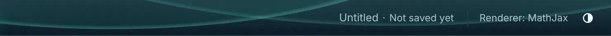
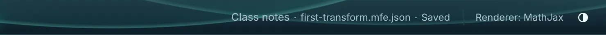
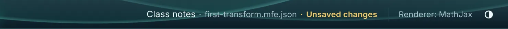
•, so you can see it from another tab.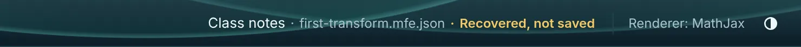
Undoing back to the saved state brings Saved back: the mark follows the project, not the number of edits. A name too long for the bar is cut short; point at it for the whole name and the file.
Click the name to rename the project. Type, and press Enter to keep the new name or Esc to leave it; either key leaves the focus on the name, so the keyboard goes on from there. Renaming is one undo step, like any other change, and the name is also a field of Project settings….
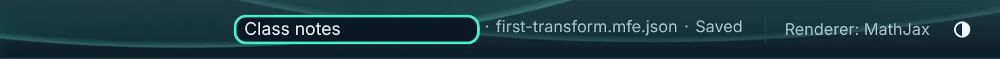
Autosave and recovery
While you work, the editor keeps a copy of the project in the browser, a moment after each change. If you reload the tab, or the tab crashes, the work comes back. It is a safety net, not a file: save to a file to keep a project, because clearing the browser's data for the editor removes the copy.
Each tab has an autosave of its own, so two tabs never overwrite each other's work. When a tab is closed, its work is not lost. Open the editor in a new tab and it takes up the newest work of the tabs that were closed; the older work waits in the menu described next. If a tab crashed instead of being closed, the editor cannot tell that it is gone for a minute. A tab you open after that takes its work up; one opened sooner does not, and the work waits in the menu described next.
The work of the other tabs that were closed stays available for a week, up to five of them, under File ▸ Recover autosave:
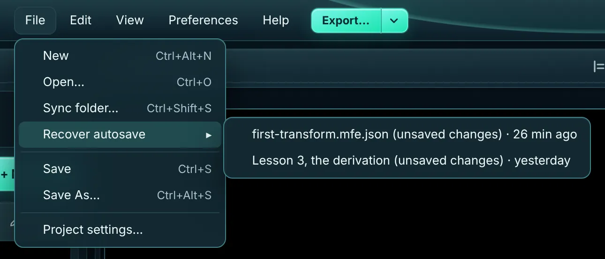
Each entry gives the file name, or the project's name when it has no file; (unsaved changes) when it had changes not yet saved; and how long ago it was kept. Choose one to bring it back into this tab, after the usual question about the project you have open. The bar then says Recovered, not saved when the entry had unsaved changes. An entry without that mark was saved: it comes back as Saved, with its file name, or as Not saved yet when it had none.
When the browser itself closed unexpectedly and restores its tabs, each tab gets its work back within a minute: by itself if you have not used the tab yet, and otherwise through a notice, Work from this tab's last session is available, with a Recover button.
The project library and the Sync folder
The Projects dialog is the editor's way to open a project. It lists the projects of one folder, with a drawing of the first formulas of each. You choose the folder once with File ▸ Sync folder… (also a button of the dialog, and of the Creator while a project is empty). The browser's own folder picker opens; like the file picker, it is a window of your operating system.
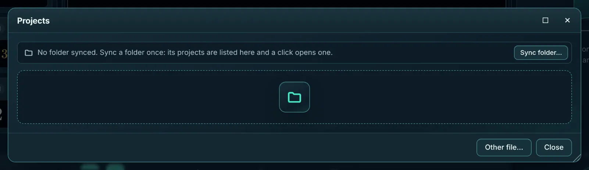
Once a folder is synced, its projects are cards, newest first:
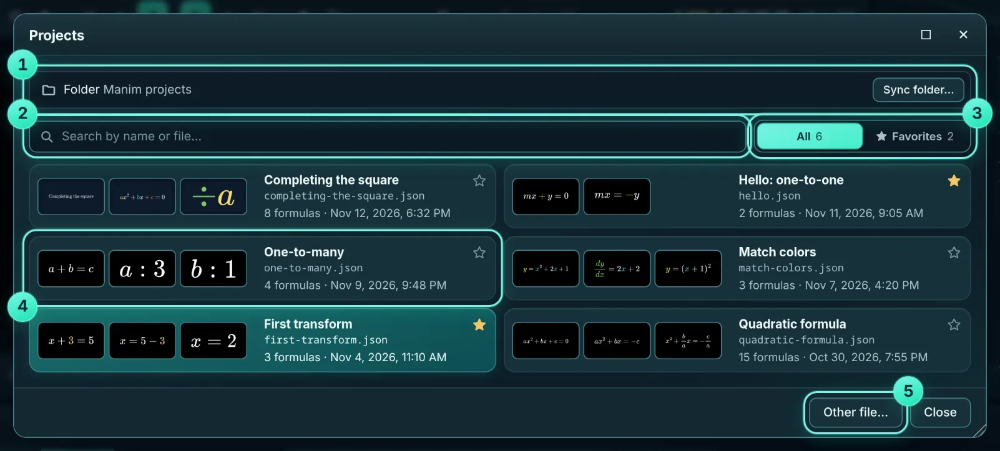
- The folder, and Sync folder… to choose another.
- The search. It keeps the projects whose name or file name has every word you type, ignoring capitals and accents. The field has the focus when the dialog opens. Esc empties it; a second Esc closes the dialog.
- All and Favorites, each with its count.
- A card: the first three formulas, the project's name, its file name (
.mfe.jsonis shown as.json), how many formulas it has, and when it was last changed. The star marks it as a favourite. - Other file…, for a file that is not in the folder.
The dialog fits as many columns of cards as it has room for. Drag its bottom-right corner to resize it, or press the square in its title bar to make it fill the window; a double-click on the corner gives it back its first size. It opens at the size you left it until you reload the page.
The folder is read one level deep: projects in its sub-folders are not listed, and a .json file that is not a project is counted at the foot of the dialog (One other .json file in the folder is not a project) and left alone. A file of the folder that is a project and does not open, one saved by a newer version of the editor, one with a field out of place, a .mfe that is damaged, a .mfe.json whose text was cut short, is not counted there: it is named under the cards (One project of the folder does not open:) with its reason, the one opening that file gives.
Favorites
The star of a card keeps that project in Favorites. The stars are kept in this browser, by the names of the folder and of the file; nothing is written in your folder. A file you rename loses its star, and another browser does not see yours.
The folder in each browser
What the dialog can do with the folder depends on the browser.
- Chrome and Edge keep the folder and read it again every time the dialog opens, after the browser's permission question once per session. When the browser has forgotten its permission, the dialog says The browser did not allow reading the folder and offers Allow; when the folder was moved or deleted, it says so. A project opened from the folder carries its file, so Save writes it in place, and Save As… starts in that folder.
- Firefox and Safari keep a snapshot of the folder as it was when you synced it, and the dialog says when (Manim projects, as of Nov 12, 2026, 6:32 PM. Sync the folder again to refresh.). Nothing is written into the folder: Save downloads a file.
In Chrome and Edge the folder also holds your own templates, in templates/templates.json, once you let the editor write there.
Packages (.mfe)
A project that has recordings cannot be one text file: the sound has to travel with it. The editor saves such a project as a package, a .mfe file that holds the project and the original of every recording, including the ones you muted or never used. The editor chooses by itself: Save suggests a .mfe name when the project has recordings, and a .mfe.json name when it has none.
Opening a package checks every recording and copies it into the browser's storage. With a large package a dialog shows how far it is, and Cancel leaves the project you have open as it was. The package is also the portable backup of a project with sound: the browser's own storage can be cleared or evicted, and the file cannot.
If the browser no longer holds the original of a recording, perhaps because you cleared its data, Save first looks for it in the file it is about to replace. If it is not there either, Save tells you which recordings it cannot include and asks before it writes a file without them. Audio has the rest.
What the file does not hold
The file holds the project, and nothing about how you like to work. These do not travel with it:
- your preferences: snapping and its guides, the grid, the transform handles, the scale step, and the default intros and outros of new clips;
- your palettes (Palettes and Chroma Lab): a project keeps the colours it uses as plain colours, so it looks the same on a computer that has none of your palettes;
- your templates, which Chrome and Edge also keep in the synced folder;
- the theme, the sizes of the panels and which of them are folded;
- the zoom of the timeline and the height of its tracks, which are a view of the timeline and last as long as the tab.
Open a project on another computer and it plays the same; the editor around it is that computer's.
Browsers without file access
A browser without the File System Access API works on copies. Opening a file (File ▸ Open…, then Other file…) reads a copy of it; Save downloads a file named from the project each time, and the bar says Saved once the download has started even though the editor cannot write that file again; Sync folder… takes a snapshot. The editor tells you once per session, as it opens:

To carry on from a file you downloaded, open it again with File ▸ Open… and Other file…. Browsers compares the two kinds of browser side by side.
One tab at a time
Use one tab of the editor at a time. Every tab keeps an autosave of its own and never overwrites another's, but two open tabs do not see each other's changes, and nothing merges them. A window opened or duplicated from another tab keeps an autosave of its own too. If you need the same project in two places, save it to a file and open the file.
Where to go next
- Writing formulas begins the basics: the formula editor, its LaTeX fields and the Creator list.
- Project files and their format says what a project stores, and how older files open.
- The template library starts a formula from one of 257 ready-made ones.